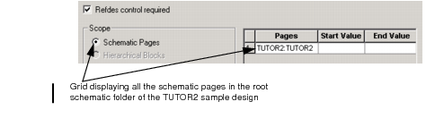
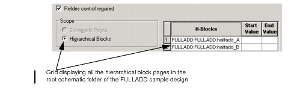

You can customize the way Capture assigns part references in your design. You can specify a range of part reference values that Capture will use to annotate a schematic page or a hierarchical block in your design. Use the Annotate dialog box to complete this task.
|
|
This functionality works independently from the existing annotation behavior of Capture. |
Schematic page-wise and hierarchical block-wise annotation
In schematic page-wise annotation (recommended for flat design), you can set a part
reference range for each schematic page that exists in the
root schematic folder of your design. All the schematic
pages in the root schematic folder are displayed in a grid
in the Annotate dialog box in the following format:
Schematic_Folder_Name:Schematic_Page_Name
.
In hierarchical block-wise annotation (recommended for hierarchical design), you can set a part reference range for each hierarchical block that exists in root schematic folder of your design. All hierarchical blocks in the root schematic folder are displayed in a grid in the Annotate dialog box in the following format: Schematic_Folder_Name:Hierarchical_Block_Name.
If you set the design for schematic page-wise or hierarchical block-wise annotation and also use the:
- Incremental reference update option, then all the part references in your design are updated incrementally within the specified part reference range. However, this does not affect the already annotated parts in your design.
- Unconditional reference update option, then all the part references in your design are updated unconditionally from the start value specified in the part reference range.
Additionally, Capture will flash error and warning messages, if it encounters any invalid operation while using this functionality. For example, same part reference range for more than one schematic page or hierarchical blocks in your design or parts in your design that are outside the specified part reference range.
To perform schematic page-wise or hierarchical block-wise annotation
-
In the project manager, select the design file, schematic folder, or a schematic page.

Capture currently does not support the specifying of part reference range for a portion of the design, for example, a specific schematic page or a schematic folder. You should specify a part reference range for all the schematic pages or hierarchical blocks in your design.
-
From the Tools menu, select the Annotate command. The Annotate dialog box appears.
To perform regular annotation, see To uniquely identify parts.
-
Select the Refdes control required check box, if you want to specify a part reference range for each schematic page or a hierarchical block in your design. The Scope options in the dialog box changes to Schematic Pages and Hierarchical Blocks. Also, a grid appears on the right-hand side of the dialog box displaying all the schematic pages or hierarchical blocks in the root schematic folder of your design depending on whether your design is a flat design or a hierarchical design (see figure: Annotate Dialog Box - Refdes control required ).
The Hierarchical Blocks option is not available, if there are no hierarchical blocks in the root schematic folder of your design.
The grid is divided into rows and columns. Each row has a number, a schematic page name or a hierarchical block name, and cells to specify the Start and End values for the part reference range.
For example, the TUTOR2.dsn sample design, which is a flat design, contains a schematic page defined at the root level of the design. When you select the Refdes control required check box, then the grid displays the following entry in the Pages column: TUTOR2:TUTOR2, where the first TUTOR2 is the root schematic folder name and the second TUTOR2 is the schematic page name.
Figure: Annotate Dialog Box - Refdes control required
Take the example of a hierarchical design. The FULLADD.DSN sample design, which is a hierarchical design, contains two hierarchical blocks defined at the root level of the design. When you select the Refdes control required check box, then the grid displays the following two entries in the H-Blocks column: FULLADD:FULLADD:halfadd_A and FULLADD:FULLADD:halfadd_B, where FULLADD is the root schematic folder name and FULLADD:halfadd_A and FULLADD:halfadd_B are the reference to the root-level hierarchical blocks in the design.

The grid displays only the schematic pages or hierarchical blocks on the root schematic of the design.
-
Enter a numeric value greater than 0 in the Start Value and End Value columns corresponding to each schematic page name or the hierarchical block name.

– Use the Tab key to move from the Start Value column to the End Value column.
– You can also use the Arrow keys to move around in the grid.
– You can use the column handle (
 ) to resize the rows and columns
in the grid.
) to resize the rows and columns
in the grid.
– A valid range must have both the Start and End Values, and the End Value must be greater than the Start Value.
-
Specify all the other desired settings in the Annotation dialog box.
-
Click OK.
Part references in each schematic page or hierarchical block get updated according to the range specified for them in the Annotate dialog box.
|
|
|